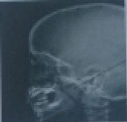

Questão 1 · Laringite por abuso vocal · 4000127781Adolescente, após ter participado de evento esportivo em ambiente aberto e lotado de torcedores, apresentou após algumas horas, rouquidão com piora progressiva. Nega dor, odinofagia ou tosse. Nega eventos semelhantes. Ao exame: bom estado geral, corado, eupneico. Oroscopia normal. Ausculta torácica normal. De acordo com o enunciado assinale o provável diagnóstico e conduta.
A Laringite por abuso vocal, repouso de voz.
B Laringite viral, corticoterapia
C Paralisia de cordas vocais, encaminhar para otorrinolaringologista
D Granuloma de cordas vocais, encaminhar para fonoaudiologia
Questão 2 · Apneia Obstrutiva do Sono na Inf ância · 4000085119Na síndrome da apneia obstrutiva do sono em crianças é correto afirmar: I- Hipertrofia adenotonsilar, obesidade, anomalias craniofaciais, transtorno neuromuscular são fatores de risco; II- Distúrbio neurocognitivo, problemas comportamentais, dé cit de crescimento e cor pulmonale são complicações encontradas; III- A adenotonsilectomia e o CPAP são opções de tratamento. De acordo com as afirmativas acima, marque a resposta correta:
A Somente a alternativa I é correta.
B Somente a alternativa II é correta.
C Somente a alternativa III é correta.
D Todas as alternativas estão corretas.
Questão 3 · Síndrome do Respirador Oral · 4000084500Quais complicações clínicas estão mais frequentemente associadas a um paciente pediátrico, respirador bucal, com hipertrofia de adenoides clinicamente significativa?
A Eosinofilia e rinite atópica.
B Polipose nasal, constipação e fibrose cística.
C Cor pulmonale e hipertensão pulmonar direita.
D Laringite e asma aguda crítica.
Questão 4 · Síndrome do Respirador Oral · 4000028758Sobre a respiração oral em crianças, é incorreto afirmar que:
A A prevalência da respiração oral em crianças brasileiras varia de 25 a 50%.
B As causas mais frequentes são rinite alérgica e hiperplasia adenotonsilar.
C 60% do crescimento craniofacial ocorre durante os primeiros 4 anos e 90% até os 12 anos de vida.
D O raio-x de cavum é considerado o exame padrão-ouro para diagnóstico de aumento das tonsilas palatinas.
Questão 5 · Anatomia Funcional da Laringe · 4000019334Assinale a alternativa INCORRETA sobre a obstrução das vias aéreas:
A Algumas partes das vias aéreas superiores podem sofrer colapso com maior facilidade do que outras, motivo pelo qual há diferentes apresentações clínicas das doenças dessas vias.
B Estridor é o som respiratório produzido pela passagem de ar em uma via aérea de grosso calibre estreitada.
C Estridor a partir da obstrução supraglótica geralmente produz um som ouvido, sobretudo, durante a inspiração.
D Via aérea glótica compreende a porção inferior da traqueia e os brônquios principais.
Questão 6 · Anatomia Funcional da Laringe · 4000019263Considerando a via aérea supraglótica em crianças, assinale a alternativa CORRETA:
A Por possuir cartilagem dificilmente sofrem colapso.
B Compreende as vias aéreas do nariz a faringe.
C Há presença de múltiplos planos de tecido nessa parte da via aérea, o que favorece disseminação de infecções localizadas.
D São exemplos de infecções dessa parte da via aérea supraglotiteinfecciosa, difteria e traquite bacteriana.
Questão 7 · Apneia Obstrutiva do Sono na Inf ância · 4000003116Assinale a alternativa que apresenta alterações cognitivas presentes na criança com síndrome da apneia obstrutiva do sono.
A São achados de exame.
B Podem estar presentes desde o ronco primário.
C São sempre encaminhadas para psicoterapia.
D Devem ser muito valorizadas.
Questão 8 · Apneia Obstrutiva do Sono na Inf ância · 4000000817Marque a alternativa correta sobre a cirurgia de adenotonsilectomia.
A Deve ser sempre indicada na síndrome da apneia obstrutiva do sono independente do grau de obstrução e da queixa dos pais.
B Tem seus riscos e está contraindicada em obesos e menores de 02 anos.
C Pode ser indicada como tratamento da síndrome da apneia obstrutiva do sono na criança, mas pode não melhorar a apneia.
D Deve ser sempre indicada, independentemente da faixa etária ou dos riscos.
Questão 9 · NR7 Programa de Controle Médico de Saúde Ocupacional · Nódulos Vocais · 4000121104Distúrbio de Voz Relacionado ao Trabalho DVRT Mulher de 40 anos apresenta rouquidão intermitente, com piora progressiva no último ano. Relata que inicia a semana com voz quase normal, mas na sexta-feira ca bem rouca, precisando de muita força para conseguir falar. AP: professora há 15 anos, trabalhando em sala de aula em dois períodos do dia. Nega tabagismo. O diagnóstico mais provável é
A nódulos de pregas vocais.
B edema de Reinke.
C sulco vocal.
D laringite posterior.
Revisar: possível letra faltando em enunciado
Questão 10 · Apneia Obstrutiva do Sono na Inf ância · 4000119271Matheus tem 4 anos de idade e apresentar ronco noturno. Sua mãe está preocupada com a possibilidade de o menino ter apneia obstrutiva do sono. O exame padrão-ouro para o diagnóstico de apneia na infância é:
A Polissonografia de noite inteira.
B Nasofibroscopia.
C Cefalometria.
D Radiografia do covum faríngeo.
Questão 11 · Apneia Obstrutiva do Sono na Inf ância · 4000116097Adolescente de 16 anos com obesidade mórbida. Qual das seguintes condições abaixo é a causa mais comum de insuficiência respiratória em adolescentes obesos?
A Apnéia do sono
B Pneumotórax
C Doença do refluxo gastroesofágico
D Insuficiência cardíaca congestiva
E Asma
Questão 12 · Anatomia da laringe e das vias aéreas na inf ância · 4000127532Em relação à laringe da criança,
A sua porção mais estreita, a fenda glótica, é visível durante a intubação direta.
B tem forma cônica, sua porção mais estreita é na altura das pregas vocais.
C o achado de epiglote em ômega contribui para o diagnóstico de laringomalacia.
D pequenos estreitamentos podem ocasionar obstruções graves com risco de vida.
E apresenta localização mais baixa que a do adulto.
Questão 13 · Edema de Reinke · 4000070220Mulher de 55 anos foi submetida à tireoidectomia total devido a carcinoma papilífero. Após um mês da cirurgia, a voz da paciente cou grossa e baixa. A videolaringoscopia realizada após a cirurgia evidenciou edema de Reinke e mobilidade das cordas vocais normais. Nesse caso, a causa menos associada à atual condição dessa paciente é:
A tabagismo
B hipotireoidismo
C entubação orotraqueal
D refluxo laringofaringeano
Questão 14 · Síndrome do Respirador Oral · 4000055136Marque a afirmativa correta.
A Um paciente com a Síndrome do Respirador Oral (SRO) decorrente de hipertrofia adenoidiana pode manter o sintoma de respiração oral mesmo após o tratamento da causa.
B São fatores que influenciam as manifestações clínicas decorrentes da respiração oral: a idade do paciente quando do início dos sintomas e, em alguns casos, a intensidade da obstrução.
C A gravidade do quadro clínico do paciente com SRO independe do tempo de permanência do sintoma até sua normalização.
D Pacientes respiradores orais de causa neural têm a hipertrofia adenoidiana como a principal causa.
E A causa mais comum da SRO na infância é a atresia coanal.
Questão 15 · Apneia Obstrutiva do Sono na Inf ância · 4000055124Paciente feminino, quatro anos de idade, cursando com respiração oral de suplência noturna há 8 meses, roncos, apneia do sono, bruxismo, sono agitado e enurese noturna, apresentando ainda problemas de aprendizagem escolar, dé cit de atenção, sonolência diurna e prurido nasal com espirros. Ao exame físico, observou-se deformidade facial com protusão da arcada dentária superior, palato ogival, amígdalas palatinas grau 1, cornetos nasais inferiores hipocorados e aumentados de tamanho, linha de Denie Morgan e sulco transversal nasal. Com base neste caso, é incorreto afirmar:
A Pode-se classificar este paciente como portador da Síndrome do Respirador Oral e da Apneia e Hipopneia Obstrutiva do Sono.
B Este paciente também apresenta sintomas e sinais sugestivos de rinopatia alérgica associada.
C Nesta faixa etária a causa mais comum de quadros com esses sintomas é a hipertrofia adenoidiana, devendo o paciente ser operado após completar os sete anos de idade.
D É necessário nestes casos avaliar repercussões para o aparelho auditivo, como, por exemplo, a presença de otite média serosa.
E É fundamental a avaliação do rinofaringe, o que pode ser feito através da radiografia simples do cavum ou da videoendoscopia nasal com visão do rinofaringe.
Questão 16 · Síndrome do Respirador Oral · 4000055112Criança com seis anos de idade, apresentando quadro clínico sugestivo da Síndrome do Respirador Oral. Nesse caso, é importante lembrar que
A a radiografia simples das cavidades paranasais nas incidências frontonaso e mentonaso é fundamental no diagnóstico da hipertrofia adenoidiana.
B são causas comuns de respiração oral na infância a hipertrofia adenoidiana, o desvio do septo nasal e hipertrofia adenoamigdaliana.
C a hipertrofia adenoidiana, quando sintomática, deve ser operada somente após os três anos de idade, caso contrário pode voltar a ficar hipertrofiada.
D as deformidades torácicas do paciente com Síndrome do Respirador Oral regridirão espontaneamente após o tratamento da causa.
E a principal característica do paciente com Síndrome do Respirador Oral é a obstrução nasal intermitente.
Questão 17 · Hipertrof ia de Adenoide · 4000117201Sobre a hipertro a das adenóides (criança ronca ao dormir; respira pela boca; sono agitado; sonolência diurna), podemos afirmar:
A Adenóides correspondem, anatomicamente, aos cornetos médios e superiores.
B Podem estar relacionadas com a etiologia de otites de repetição.
C A exérese cirúrgica das adenóides (que é um órgão linfóide) elimina as reações alérgicas e é o tratamento de escolha para curar a rinite alérgica.
D Nunca tem indicação de tratamento cirúrgico, pois tendem a regredir e diminuir de volume após os 6 anos de idade.
Questão 18 · Apneia Obstrutiva do Sono na Inf ância · 4000102723Todas as alternativas a seguir constituem situações clínicas associadas à síndrome da apneia obstrutiva do sono na criança, com EXCEÇÃO de uma delas. Assinale-a.
A Laringomalácea.
B Pós-operatório de palatoplastia.
C Macroglossia.
D Epilepsia.
Questão 19 · Apneia Obstrutiva do Sono na Inf ância · 4000102705São sinais e sintomas frequentes em crianças com síndrome da apneia obstrutiva do sono, com EXCEÇÃO de:
A Ronco alto, presente pelo menos 4 vezes por semana (ronco habitual).
B Sono agitado, com trocas frequentes de decúbito.
C Sudorese.
D Sonambulismo.
Questão 20 · Apneia Obstrutiva do Sono na Inf ância · 4000102688Acerca da Síndrome de Apneia Obstrutiva do Sono (SAOS), assinale a alternativa CORRETA.
A Na criança é uma situação rara e tem uma prevalência estimada de 1,8%.
B Ocorre predominantemente em meninos.
C É mais comum em pacientes com anomalias crânio faciais.
D História familiar de SAOS é raramente encontrada nesses pacientes.
Questão 21 · Nódulos Vocais · 4000027303Paciente do sexo feminino, 33 anos, professora desde os 18 anos, comparece ao ambulatório de otorrinolaringologia com queixa de disfonia progressiva há cerca de 10 meses. Refere que a disfonia se agrava no nal do dia, após o turno de trabalho. Nega álcool e tabagismo. Frente a esse caso, qual a principal hipótese diagnóstica?
A Tumor glótico.
B Sulco vocal.
C Nódulo em prega vocal.
D Microdiafragma.
Questão 22 · Apneia Obstrutiva do Sono na Inf ância · 4000097488Menino, 9a, comparece em Unidade Básica de Saúde para consulta de rotina anual. Mãe refere que criança vem apresentando roncos noturnos, sono agitado e episódios de pausa respiratória. Acha que o lho é agitado, desatento e dorme na sala de aula. Antecedente pessoal: rinite, controlada com higiene nasal e pro laxia ambiental. Exame físico: hipertrofia de amígdalas grau III, hipertrofia de cornetos nasais e respiração oral. O DIAGNÓSTICO E A CONDUTA SÃO:
A Transtorno Déficit de Atenção e Hiperatividade e cloridrato de metilfenidato.
B Refluxo gastroesofágico e pHmetria.
C Síndrome da apneia obstrutiva do sono e polissonografia.
D Hipertrofia de adenoides e radiograma de cavum.
Questão 23 · Anatomia Funcional da Laringe · 4000057690Considerando a fisiologia laríngea, assinale a alternativa correta:
A A musculatura intrínseca age na elevação/abaixamento da laringe e a extrínseca na mobilidade das pregas vocais.
B O músculo tireoaritenoideo promove alongamento das pregas vocais.
C O músculo cricotireoideo tem como principal ação a abdução das pregas vocais.
D Os músculos interaritenoideo e cricoaritenoideolateral são adutores das pregas vocais.
E A produção da voz depende principalmente da ação do músculo cricoaritenoideo posterior.
Questão 24 · Edema de Reinke · 4000029720Paciente do sexo feminino, 37 anos, secretária, tabagista há oito anos, refere que iniciou quadro de disfonia progressiva há quatro anos. Relata que frequentemente, ao atender o telefone, é confundida com homem (devido à voz aveludada). Diante deste caso, qual a principal hipótese diagnóstica?
A Tumor de laringe - glótico.
B Nódulo de pregas vocais.
C Edema de Reinke.
D Pólipo de prega vocal.
Questão 25 · Disf onia · 4000108891A mãe de uma menina de 3 anos e meio de idade comparece a uma unidade básica de saúde queixando-se de que sua lha iniciou gaguejamento há um mês. A gagueira da criança é caracterizada pela repetição de sílabas ("ca... casa") e de palavras ("Eu quero... quero leite!"), como também, a colocação de interjeições no meio das frases ("Eu tomei... uh... suco!"). Além disso, a mãe refere que a criança troca e/ou omite as letras de algumas palavras ("Basil" em vez de "Brasil"; "elado" em vez de "errado"). Você conversa com a criança e confirma as queixas da mãe. Além disso, você nota que os lábios da criança estão unidos e nenhum som é produzido entre as pausas de sua fala; também não se nota pausas para se iniciar a fala. Não há anormalidades no restante do exame físico. Antecedentes pessoais: apresentou seis episódios de otite média aguda, sendo o primeiro com sete meses de idade e o último há quatro meses. Dentre as alternativas abaixo, qual apresenta a conduta e a justificativa mais adequada?
A Encaminhar ao otorrinolaringologista pois trata-se de dilslalia audiógena.
B Conduta expectante pois trata-se de dilslalia audiógena.
C Encaminhar à fonoaudióloga pois trata-se de disfluência fisiológica.
D Conduta expectante pois trata-se de disfluência fisiológica.
Questão 26 · Anatomia da laringe e das vias aéreas na inf ância · 4000089995As diferenças anatômicas entre as Vias Aéreas Superiores (VAS) das crianças e dos adultos devem ser conhecidas, principalmente pelo Médico Socorrista, pois algumas delas são de relevância durante a reanimação cardiopulmonar, Essas diferenças são, exceto:
A As VAS no lactente e pré-escolar são bem menores que as do adulto.
B A epiglote é longa, ampla e angulada em relação ao eixo longo da traqueia.
C A língua na criança, em relação à orofaringe, é maior se comparada ao adulto.
D A laringe em lactentes e pré-escolares tem posição mais cefálica que o adulto.
E N.D.A
Questão 27 · Avaliação Inicial Vias aéreas Ventilação e Choque · Suporte avançado de via aérea · 4000087985Suporte básico da via aérea Das alternativas abaixo qual não pode ser considerada como provável obstrução de vias aéreas?
A Deslocamento posterior da base da língua.
B Aspiração.
C Hematomas cervicais.
D Choque hemorrágico.
E Lesão de vias aéreas.
Questão 28 · Granuloma de Pregas Vocais · 4000100948Paciente de 32 anos, sexo masculino, sofreu queda de moto e necessitou car em UTI durante 15 dias, em intubação orotraqueal. Após sair do hospital, permaneceu com sensação de globus faríngeo, tosse seca e pigarro frequentes, devido a inúmeros antiin amatórios que permanece tomando. Tinha história de pirose e epigastralgia antes do acidente, mas nunca procurou atendimento médico. Há dias, após episódio intenso de dor epigástrica, notou que a voz piorou um pouco e relatou piora da sensação de “algo parado na garganta”. O provável diagnóstico e o local da lesão serão, respectivamente:
A granuloma de prega vocal e lesão uni ou bilateral em terço posterior de prega vocal
B pólipo de prega vocal e lesão unilateral em terço médio de prega vocal
C nódulo vocal e lesão bilateral entre terço anterior e médio de pregas vocais
D edema de Reinke e lesão bilateral em pregas vocais
Questão 29 · Apneia Obstrutiva do Sono na Inf ância · 4000085430Paciente masculino, de 8 anos, foi trazido à consulta por apresentar fadiga, cefaleia matutina e diminuição do rendimento escolar. Questionados sobre o sono, os pais relataram 5-6 episódios semanais de roncos altos e eventual sudorese noturna associada. Não havia história de febre, alteração do crescimento e/ou do desenvolvimento nem sinais e/ou sintomas sugestivos de doença neurológica. Ao exame físico, a criança encontrava-se eutró ca e com olheiras, sem outras anormalidades. A dosagem de TSH estava normal. O raio X de cavum está reproduzido abaixo. Qual a principal suspeita diagnóstica e qual o exame mais indicado para confirmá-la?

A Ronco primário - polissonografia de noite inteira.
B Apneia obstrutiva do sono - polissonografia de noite inteira.
C Síndrome da resistência aumentada das vias aéreas superiores - manometria esofágica.
D Parassonia - eletroencefalografia em sono.
E Narcolepsia - polissonografia de noite inteira.
Revisar: possível letra faltando em enunciado
Questão 30 · Síndrome do Respirador Oral · 4000061040Mãe procura consultório com criança de 3 anos apresentando queixa de obstrução nasal com di culdade para dormir e irritabilidade. Refere que a criança dorme com a boca aberta e apresenta roncos durante o sono. Ao exame apresenta protrusão de dentes, retrognatia, má oclusão, posição aberta dos lábios, nariz pequeno e palato ogival. No caso descrito, o diagnóstico é:
A Desvio de septo.
B Glioma nasal.
C Atresia de coanas.
D Hipertrofia de adenoides.
E Rinite alérgica.
Questão 31 · Apneia Obstrutiva do Sono na Inf ância · 4000121236As indicações de Adenoamigdalectomia (tonsilectomia faríengea e palatina) apresentam grandes controvérsias a despeito de sua realização. Qual indicação é considerada absoluta:
A Infecções recorrentes;
B Baixa estatura e baixo apetite;
C Apneia Noturna e cor pulmonale;
D Halitose.
E Nenhuma das anteriores.
Questão 32 · Anatomia da laringe e das vias aéreas na inf ância · 4000099200As diferenças anatômicas entre as Vias Aéreas Superiores (VAS) das crianças e dos adultos devem ser conhecidas, principalmente pelo Médico Socorrista, pois algumas delas são de relevância durante a reanimação cardiopulmonar. Essas diferenças são, exceto:
A as VAS no lactente e pré-escolar são bem menores que as do adulto.
B a epiglote é longa, ampla e angulada em relação ao eixo longo da traqueia.
C a língua na criança, em relação à orofaringe, é maior se comparada ao adulto.
D a laringe em lactentes e pré-escolares tem posição mais cefálica que o adulto.
E crianças menores de 08 anos tem região mais estreita abaixo das cordas vocais e a laringe “afunilada ” em relação aos adolescentes e adultos.
Questão 33 · Hipertrof ia de Adenoide · 4000079686Mãe chega à consulta ambulatorial com seu lho de cinco anos informando que o menino apresenta otites médias de repetição, coriza persistente, respiração bucal, roncos noturnos e pausas respiratórias durante o sono. O quadro clínico é sugestivo de:
A rinite alérgica
B resfriado comum
C deficiência de IgA
D hipertrofia de adenoides
Questão 34 · Anatomia da laringe e das vias aéreas na inf ância · 4000048350Com relação à anatomia da via aerífera no lactente podemos afirmar, exceto:
A A epiglote é mais anteriorizada e elástica em relação ao adulto.
B A epiglote localiza-se ao nível da segunda e terceira vértebras cervicais.
C A laringe assume a forma de um funil, enquanto no adulto tem a forma cilíndrica.
D Respeitando a anatomia da via aerífera do lactente, é recomendado o uso de lâminas curvas para entubação do lactente.
E A língua do lactente é maior, sendo dificultada a entubação do lactente, se comparada ao adulto.
Questão 35 · Hipertrof ia de Adenoide · 4000076879Comparece, ao ambulatório, um paciente de cinco anos de idade com história de otites de repetição, rinite persistente e apneia obstrutiva do sono. Essa sintomatologia é classicamente observada em casos de:
A Pólipo nasal.
B Estado gripal.
C Alergia respiratória.
D Hipertrofia de adenoides. ida oib pr ed
Questão 36 · Anatomia da laringe e das vias aéreas na inf ância · 4000005562Marque a alternativa correta: Respostas: 1 12 23 34
A A via aérea pode ser dividida em 4 partes anatômicas.
B A traqueia e as vias aéreas de um lactente são menos complacentes que as crianças mais velhas e adultos.
C A via extratorácica se estende da entrada torácica aos brônquios principais.
D A via aérea intratorácica-extrapulmonar se estende do nariz à entrada torácica.
E A traqueia e as vias aéreas de um lactente são muito mais complacentes que as crianças mais velhas e adultos.